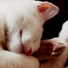

About me
Creativity Since 2011 I became interested in writing and photography. Through the years I have developed this craft.

Open-minded. I’m part of LCC International University, which values diversity. In this global age, it is important to know how to work with people from various cultural backgrounds. Being a student at LCC helped me to cultivate open-mindedness and appreciation for all kinds of people.
Writer. I was passionate about writing since 2011, because of that I developed creativity and quick-thinking. These skills I use daily when I need to come up with intuitive ideas. I have experience writing not only fictional works, but also non-fiction such as articles and social media content.